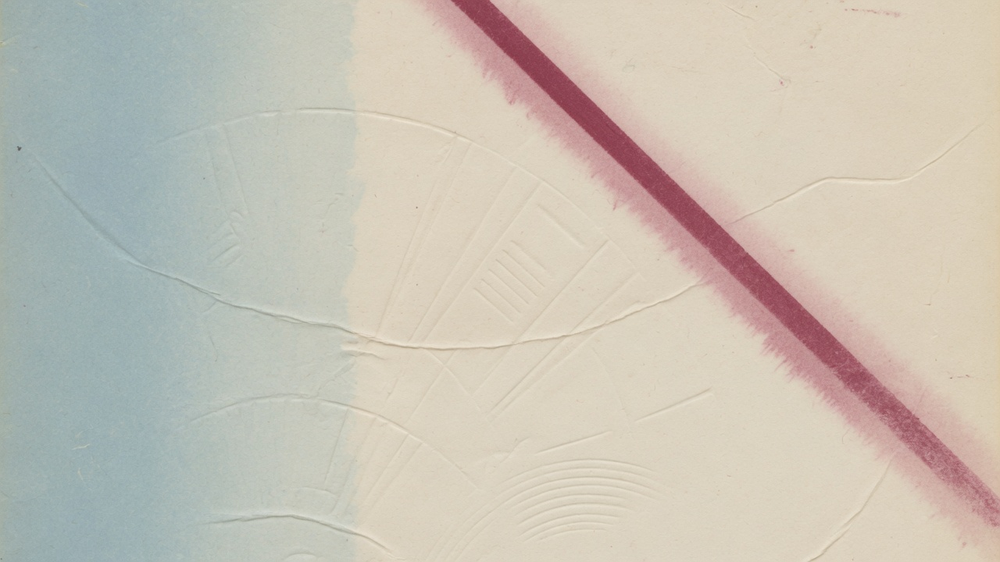

1930 – 2022 · including Olympic Games 1924 / 1928
Top World - Cup - Collection
1930 – 2022

World Cup 1930 Uruguay
1930
Uruguay


The collection
Top World - Cup - Collection


Sales documentation
Sale
Please note, that you can find the information about the items in the sales documentation (PDF – Sales Document / Verkauf / Sale / Vente / Venta). If you have any questions, please do not hesitate to contact us.